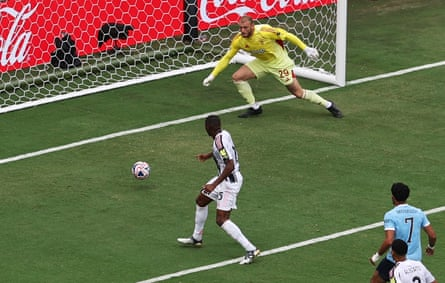

Erling Haaland’s 300th career goal graced this canter of a victory and Savinho’s 75th-minute peach lit up a Manchester City display that will be noted by the other big guns aiming to claim the inaugural 32-team Club World Cup.
The Brazilian’s 20-yard shot pinballed off the bar to make it 5-1 and confirm that Juventus would lose and finish second. While Pep Guardiola’s men remain in search of their smoothest rhythms, topping Group G is impressive, and Al-Hilal will not relish facing them in the last 16 at the far cooler 9pm kick-off time. The manager was delighted.
City were awaiting the later conclusion of Real Madrid’s group to discover their last-16 opponents, who will kick off against them at the cooler time of 9pm on Monday. The manager was delighted.
“Everybody gave an incredible performance,” said Guardiola. “It has been a long time since we had a performance like this on and off the ball. The players were committed and we are happy to beat a top side. In the previous two games we won but were miles away. I’m really pleased because the players have to realise [and did today] what we have to do to get back to what we were the last decade.”
For the attempt to beat Juve and make it three wins from three games, Rodri was handed a first start since last September’s draw with Arsenal in which he suffered the anterior cruciate ligament injury that ruled him out until the season’s closing moments. He lasted
65 minutes.
“He’s the best player in the world,” said Guardiola. “He was missed, that was clear. I’m happy hopefully he can help us a lot.”
For City’s opener Rodri tapped the ball to Rayan Aït-Nouri, who slipped in Jérémy Doku along the left channel: a sidestep created time and the cleanly struck finish gave Juve’s goalkeeper, Michele Di Gregorio, no chance.
Yet City’s advantage was cancelled out immediately by a careless Ederson, whose pass found Teun Koopmeiners instead of a teammate. The Dutchman pounced and the goalkeeper’s cheeks went as pink as his strip. It was as clownish as Pierre Kalulu’s contribution when City regained the lead. A lightning Matheus Nunes run was located by Savinho. The right-back zipped the ball over and Kalulu, with no opponent near, panicked and turned the ball in.
Calamity for Juventus as Pierre Kalulu turns the ball into his own net to restore City’s lead.Photograph: Amanda Perobelli/Reuters
An own goal, sure, but one forced by this far sharper City. A 60-65% first period possession count was potent: Aït-Nouri, Doku, Nunes and Omar Marmoush, at centre-forward, swapped zones across City’s front to cause havoc, the latter’s pirouette-then-shot an illustration. Tijjani Reijnders, from deep, joined in too, serving a slicing ball to Savinho who cut inside but dribbled tamely at Di Gregorio.
Then, a serious downpour cooled down all in temperatures of more than 30C (86F). The broiled crowd in Orlando – including Thomas Tuchel – appreciated it as much as the players, though the concern in Orange County can be dangerous electrical storms that halt games. But the rain eased, and Marmoush’s fierce shot, tipped around a post by Di Gregorio, closed the half.
Haaland replaced Marmoush and a better-timed stab at Savinho’s cross would have made it 3-1 moments into the second half. The miss spoke of a player who had scored only once from open play in 10 previous City appearances. But the statistic soon became two in 11 and completed the Norwegian’s landmark third century.
Nunes, again, was the provider, another sprint along the right this time spotted by Reijnders. The Portuguese rolled the ball to Haaland; he miskicked but it bobbled in, with Di Gregorio stranded. The 24-year-old’s second goal of the competition had his team cruising. Juve had faded as any kind of force. The contest continued to take part in their half.
Off went Rodri, unscathed, to be replaced by Ilkay Gündogan, and Phil Foden came on for the effervescent Doku. Guardiola’s move became seer-like as City’s fourth was scored by Foden. Haaland galloped through an inside-right zone and passed. Savinho pinged the ball to Foden, who collected his second of this Club World Cup calmly from close range. Savinho’s rocket rounded off an emphatic win. Dusan Vlahovic’s late finish for Juve will have annoyed Guardiola – but not for long.
Of Haaland’s feat, Guardiola said: “Congrats on 300 goals – it’s good, right? His manager was incredible at football – he scored 11 career goals. I admire him a lot.”